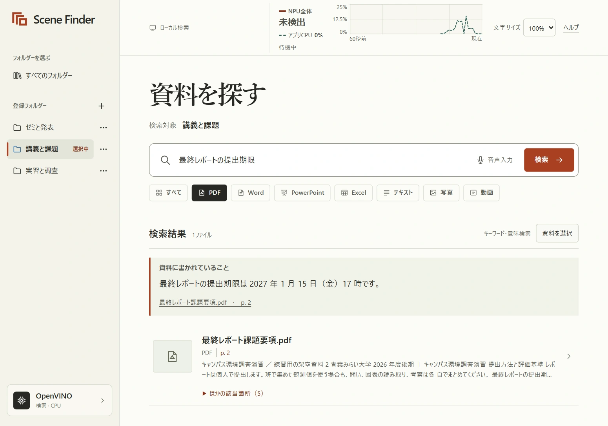

通常版
セットアップEXE ／ 約727 MB
インストールすると資料検索と音声入力が使えます。要約・整理も使う場合は、インターネットに接続し、アプリからGemma（約4.36 GB）を一度ダウンロードしてください。
通常版をダウンロード 通常版のチェックサム（SHA-256）Intel OpenVINOで動く、大学の資料検索アプリ
見つかった資料
最終レポート課題要項.pdf 2ページ
そのページの原文
最終レポートの提出期限は 2027 年 1 月 15 日（金）17 時です。

画面を拡大（新しいタブ）「フォルダーを追加」で資料の保存先を選び、「解析を開始」を押します。
解析が終わったら、探したい言葉を入力するか「音声入力」で話します。PDF、Word、Excelなど、資料の種類で絞り込めます。
結果を選んで、PDFのページやスライド、表のセル範囲を確認します。写真や動画の場面も検索できます。
シーンファインダー 0.3.1 ／ Windows 11 x64 用・無料
セットアップEXE ／ 約727 MB
インストールすると資料検索と音声入力が使えます。要約・整理も使う場合は、インターネットに接続し、アプリからGemma（約4.36 GB）を一度ダウンロードしてください。
通常版をダウンロード 通常版のチェックサム（SHA-256）モデル同梱ZIP ／ 約5.09 GB
Gemmaも同梱しています。ZIPをすべて展開し、3個のモデルデータと同じ場所にある大学用EXEを実行してください。ネット接続のない教室でも、最初から要約・整理まで使えます。
大学用ZIPをダウンロード以前の版から更新する方は、アプリを終了し、同じWindowsアカウントでセットアップを実行すると登録資料を引き継げます。セットアップには電子署名がありません。大学の管理端末では学内の配布手順に従ってください。同梱モデルなどのライセンスはインストール先の app/notices に収録しています。
スタディサプリ情報Ⅰ・プログラミング講師
青山学院中等部・青山学院大学非常勤講師